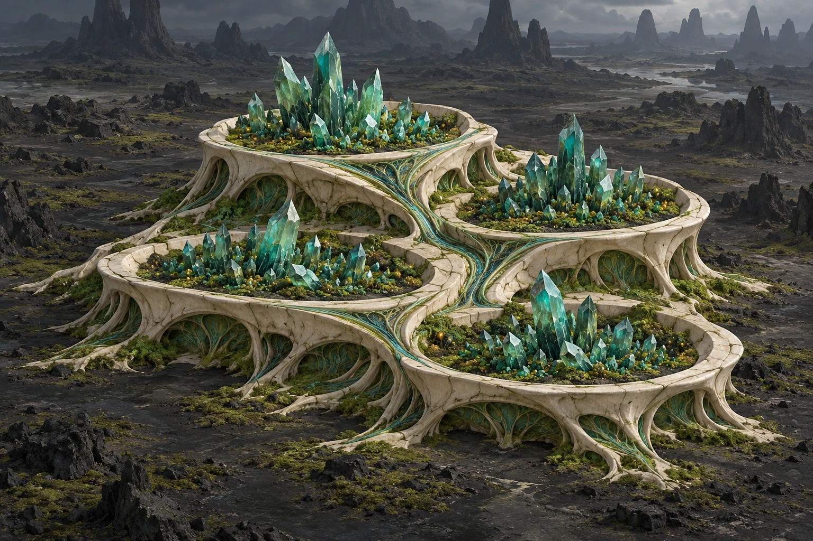
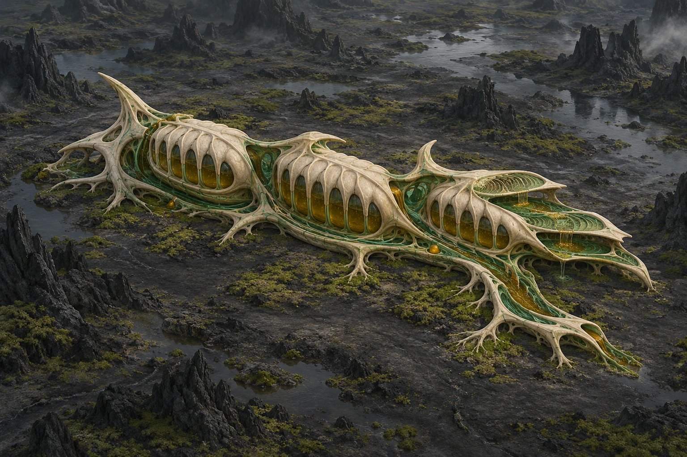
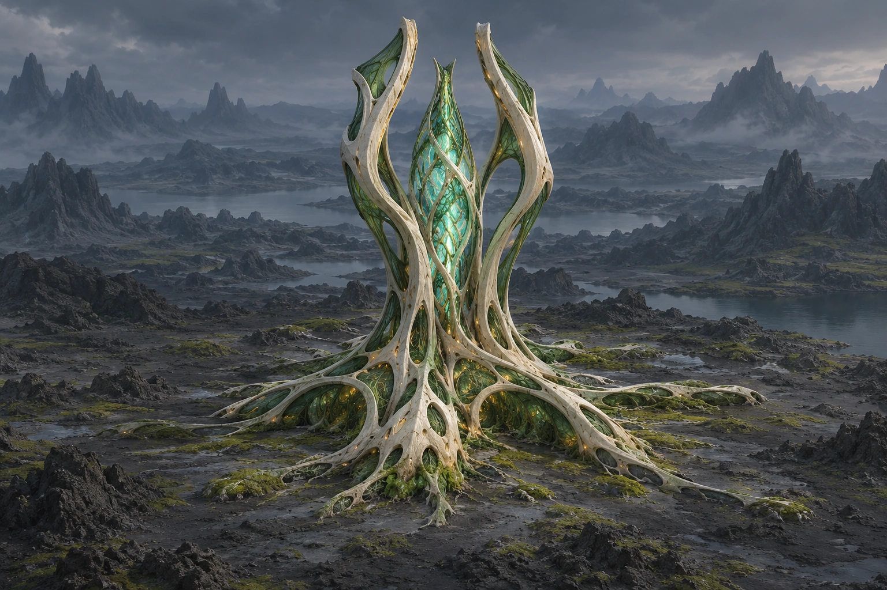
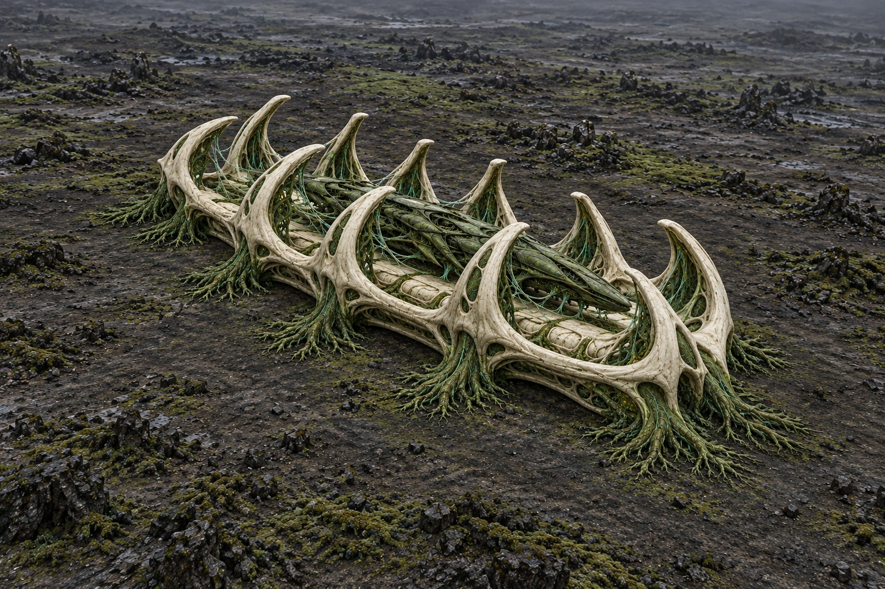
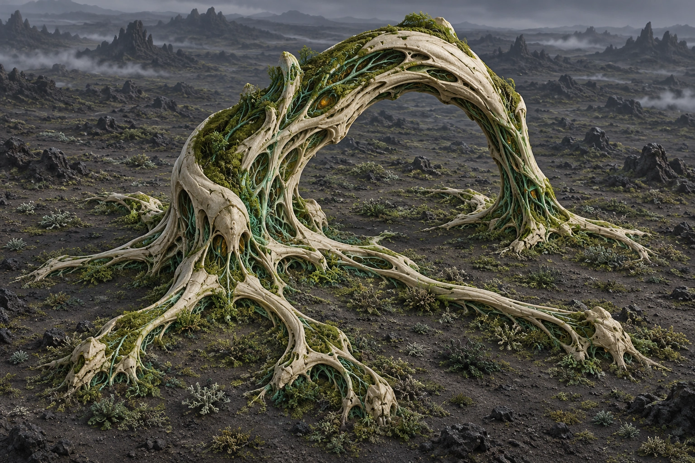
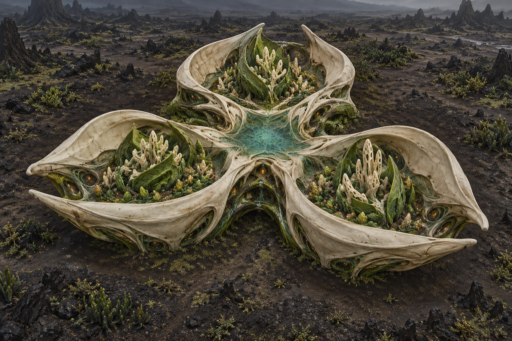
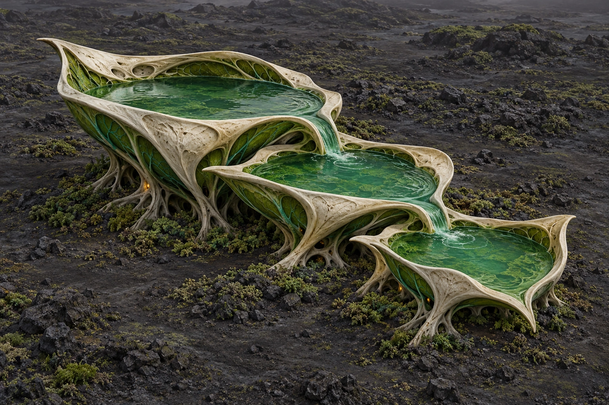

Ogród krzemowySilicon GardenHoduje kryształy w fioletowych pąkach. Produkcja kryształów rasy: −15%.
Gruczoł paliwowyFuel GlandFermentuje paliwo w bursztynowych pęcherzach. Produkcja paliwa rasy: +20%.
Serce koloniiColony HeartDaje 85 energii na poziom. Korzenie zużywają 17, ogród i gruczoł po 21 energii na poziom.
Gniazdo rojoweBrood NestHoduje żywe okręty. Lewiatan wymaga gniazda 2; cięższe okręty wymagają także badań.
Korzeń ŚwiataWorld RootPrzyspiesza budowę wszystkich budynków tej kolonii na każdym poziomie.
Zarodnia PionierówPioneer Spore NurseryWyprawy z tej kolonii zakładają nowe kolonie z wyższymi poziomami czterech budynków gospodarczych.
Zbiornik OdżywczyNutrient ReservoirZwiększa produkcję metalu, kryształów i paliwa w tej kolonii.
ObserwatoriumObservatoryUjawnia właścicieli, typy i rzadkie cechy planet w sąsiednich układach własnej galaktyki. Wyższe poziomy ujawniają pobliskie budynki.
Zetanie — ObserwatoriumObservatoryUjawnia właścicieli, typy i rzadkie cechy planet w sąsiednich układach własnej galaktyki. Wyższe poziomy ujawniają pobliskie budynki.
Automatony — ObserwatoriumObservatoryUjawnia właścicieli, typy i rzadkie cechy planet w sąsiednich układach własnej galaktyki. Wyższe poziomy ujawniają pobliskie budynki.
Symbionci — ObserwatoriumObservatoryUjawnia właścicieli, typy i rzadkie cechy planet w sąsiednich układach własnej galaktyki. Wyższe poziomy ujawniają pobliskie budynki.